مؤسسة الريان
Publisher
Books
|
Book
|
Pages
|
|---|---|
| شرح الأربعين النووية لابن دقيق العيد | 129 |
Resources
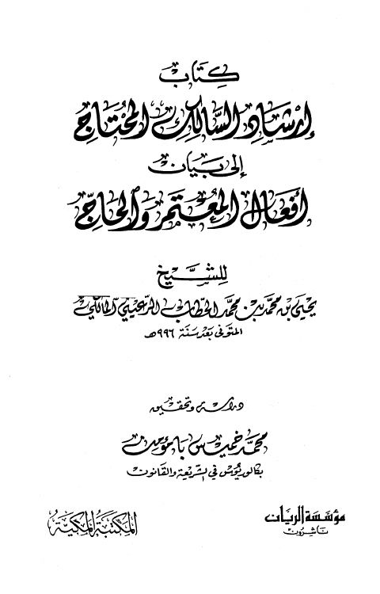
إرشاد السالك المحتاج إلى بيان أفعال المعتمر والحاج إرشاد السالك المحتاج إلى بيان أفعال المعتمر والحاج يحيى بن محمد بن محمد الحطاب الرعيني المالكي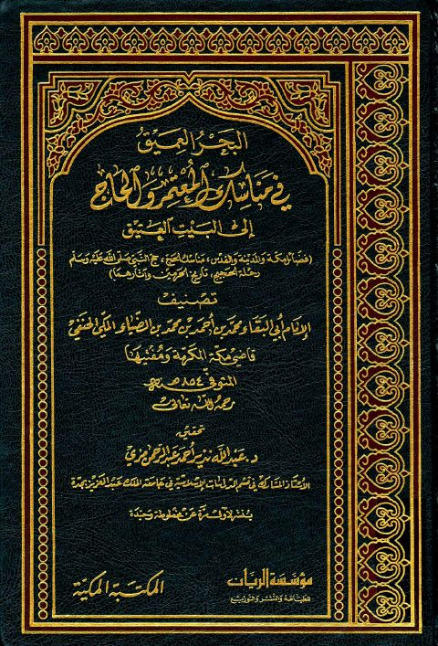
البحر العميق في مناسك المعتمر والحاج إلى البيت العتيق البحر العميق في مناسك المعتمر والحاج إلى البيت العتيق محمد بن أحمد بن محمد بن الضياء المكي الحنفي أبو البقاء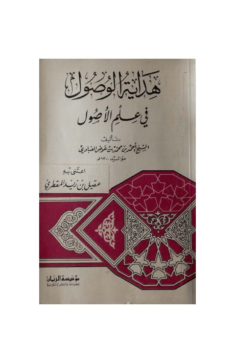
هداية الوصول في علم الأصول هداية الوصول في علم الأصول أحمد بن محمد بن عوض العبادي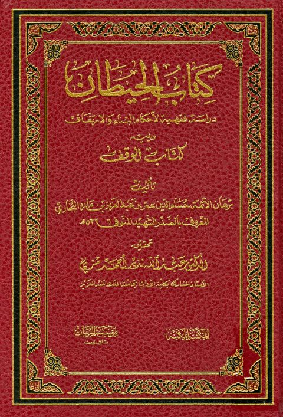
كتاب الحيطان دراسة فقهية لأحكام البناء والارتفاق ويليه كتاب الوقف كتاب الحيطان دراسة فقهية لأحكام البناء والارتفاق ويليه كتاب الوقف حسام الدين عمر بن عبد العزيز بن مازه البخاري المعروف بالصدر الشهيد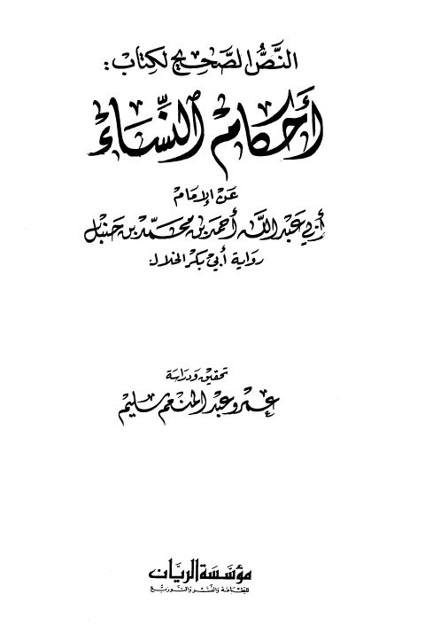
النص الصحيح لكتاب أحكام النساء عن الإمام أحمد بن حنبل رواية أبي بكر الخلال النص الصحيح لكتاب أحكام النساء عن الإمام أحمد بن حنبل رواية أبي بكر الخلال أحمد بن حنبل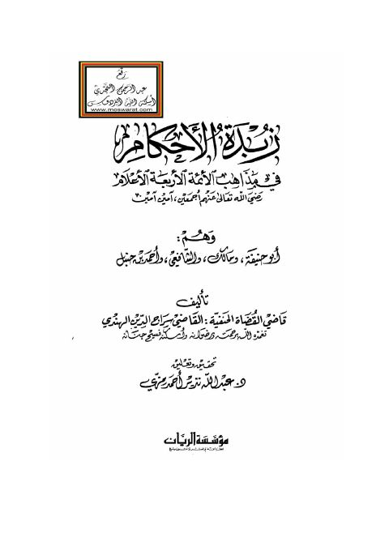
زبدة الأحكام في مذاهب الأئمة الأربعة الأعلام رضي الله تعالى عنهم أجمعين زبدة الأحكام في مذاهب الأئمة الأربعة الأعلام رضي الله تعالى عنهم أجمعين سراج الدين الهندي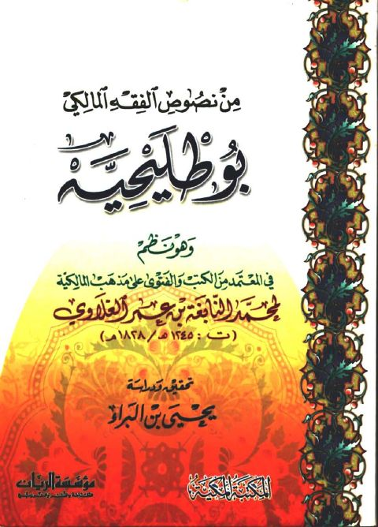
من نصوص الفقه الملكي بوطليحيه نظم المعتمد من نصوص الفقه الملكي بوطليحيه نظم المعتمد محمد النابغة بن عمر الغلاوي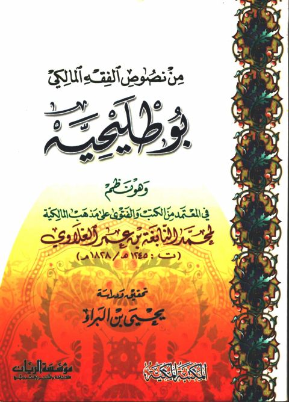
بو طليحية من نصوص الفقه المالكي بو طليحية من نصوص الفقه المالكي محمد النابغة بن عمر الغلاوي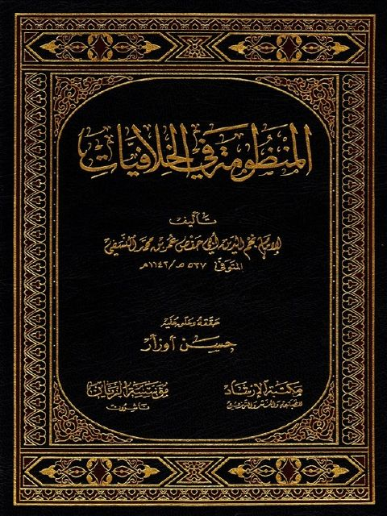
المنظومة في الخلافيات المنظومة في الخلافيات نجم الدين أبو حفص عمر بن محمد النسفي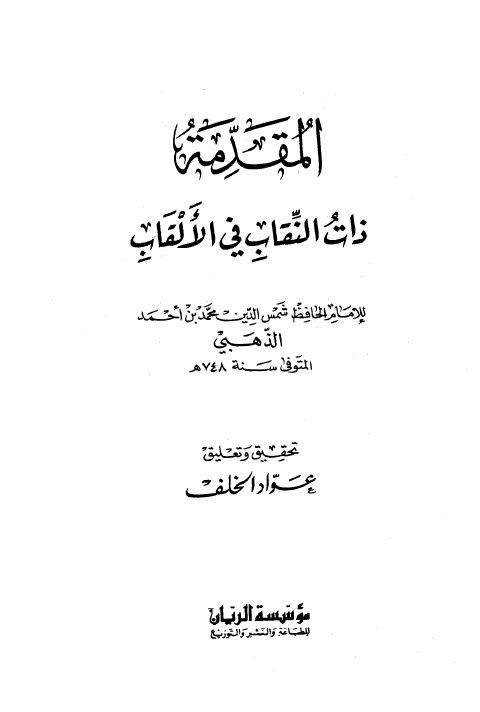
المقدمة ذات النقاب في الألقاب المقدمة ذات النقاب في الألقاب شمس الدين محمد بن أحمد بن عثمان الذهبي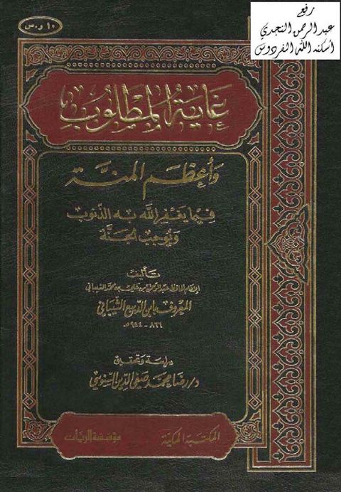
غاية المطلوب وأعظم المنة فيما يغفر الله به الذنوب ويوجب الجنة غاية المطلوب وأعظم المنة فيما يغفر الله به الذنوب ويوجب الجنة عبد الرحمن بن علي بن محمد الشيباني ابن ربيع الشيباني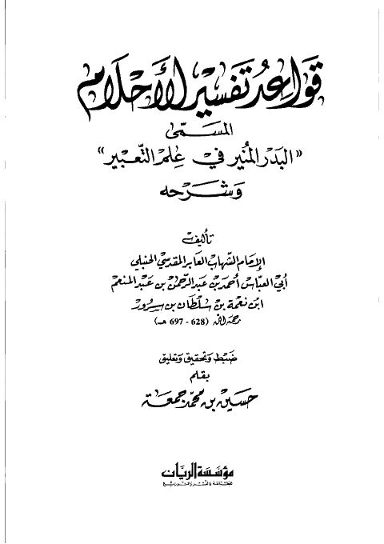
قواعد تفسير الأحلام البدر المنير في علم التعبير قواعد تفسير الأحلام البدر المنير في علم التعبير أحمد بن عبد الرحمن بن عبد المنعم ابن نعمة بن سلطان بن سرور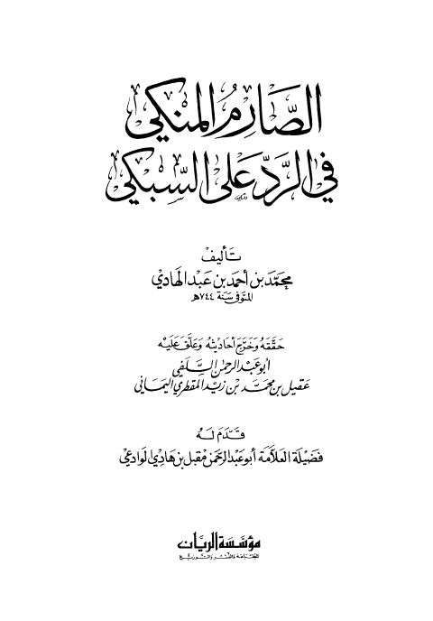
الصارم المنكي في الرد على السبكي- الريان الصارم المنكي في الرد على السبكي- الريان محمد بن أحمد بن عبد الهادي الحنبلي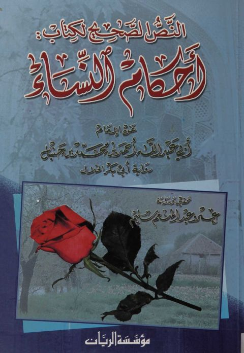
النص الصحيح لكتاب أحكام النساء النص الصحيح لكتاب أحكام النساء أبو عبد الله أحمد بن محمد بن حنبل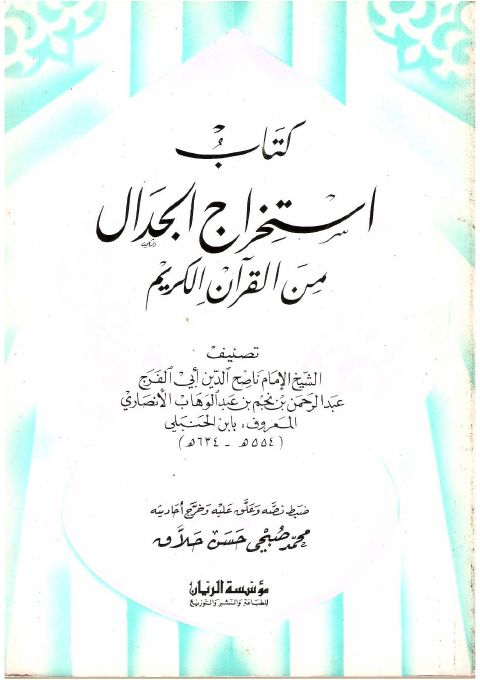
استخراج الجدال من القرآن الكريم- ت حلاق استخراج الجدال من القرآن الكريم- ت حلاق عبد الرحمن بن نجم بن عبد الوهاب الأنصاري ابن الحنبلي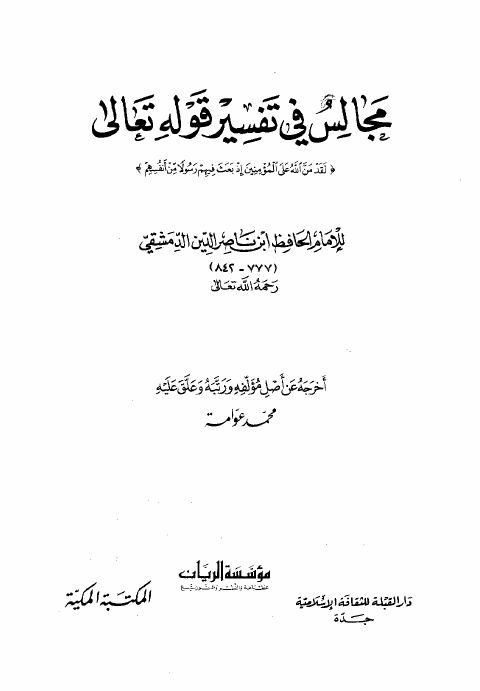
مجالس في تفسير قول الله تعالى {لَقَدْ مَنَّ اللَّهُ عَلَى الْمُؤْمِنِينَ إِذْ بَعَثَ فِيهِمْ رَسُولًا مِنْ أَنْفُسِهِمْ} - الريان مجالس في تفسير قول الله تعالى {لَقَدْ مَنَّ اللَّهُ عَلَى الْمُؤْمِنِينَ إِذْ بَعَثَ فِيهِمْ رَسُولًا مِنْ أَنْفُسِهِمْ} - الريان الحافظ ابن ناصر الدين الدمشقي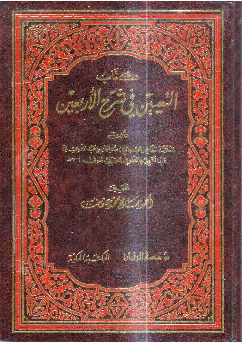
التعيين في شرح الأربعين التعيين في شرح الأربعين نجم الدين سليمان بن عبد القوي بن عبد الكريم الطوفي الحنبلي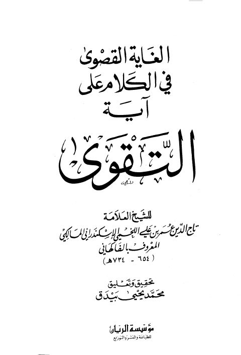
الغاية القصوى في الكلام على آية التقوى الغاية القصوى في الكلام على آية التقوى عمر بن علي الخيمي الإسكندراني المالكي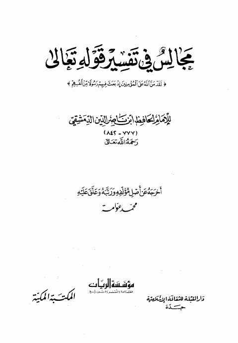
مجالس في تفسير قوله تعالى {لَقَدْ مَنَّ اللَّهُ عَلَى الْمُؤْمِنِينَ إِذْ بَعَثَ فِيهِمْ رَسُولًا مِّنْ أَنفُسِهِمْ} مجالس في تفسير قوله تعالى {لَقَدْ مَنَّ اللَّهُ عَلَى الْمُؤْمِنِينَ إِذْ بَعَثَ فِيهِمْ رَسُولًا مِّنْ أَنفُسِهِمْ} ابن ناصر الدين الدمشقي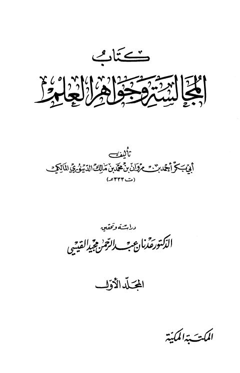
المجالسة وجواهر العلم- ت القيسي المجالسة وجواهر العلم- ت القيسي أحمد بن مروان بن محمد الدينوري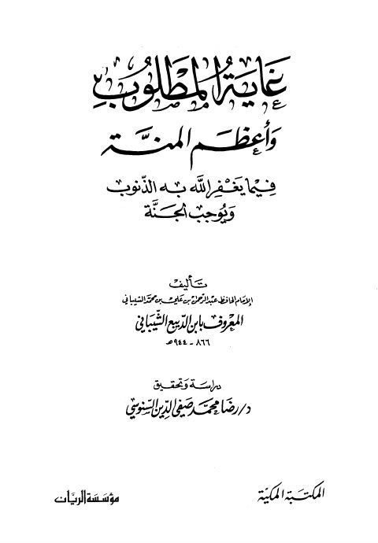
غاية المطلوب وأعظم المنة فيما يغفر الله به الذنوب ويوجب الجنة غاية المطلوب وأعظم المنة فيما يغفر الله به الذنوب ويوجب الجنة عبد الرحمن بن علي ابن الدبيع الشيباني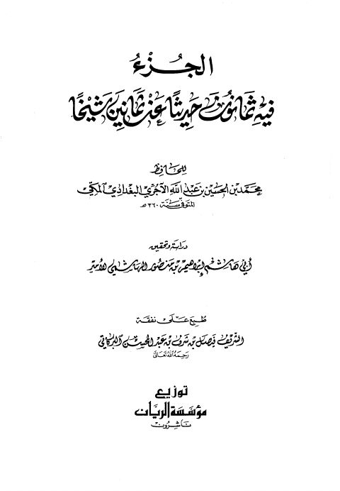
الجزء فيه ثمانون حديثًا عن ثمانين شيخًا الجزء فيه ثمانون حديثًا عن ثمانين شيخًا محمد بن الحسين الآجري البغدادي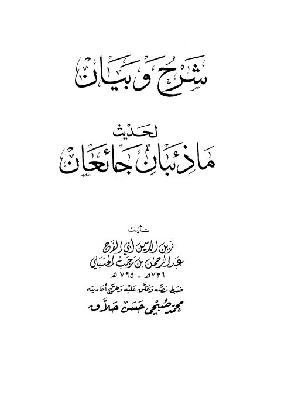
شرح وبيان لحديث ماذئبان جائعان شرح وبيان لحديث ماذئبان جائعان عبد الرحمن البغدادي بن رجب الحنبلي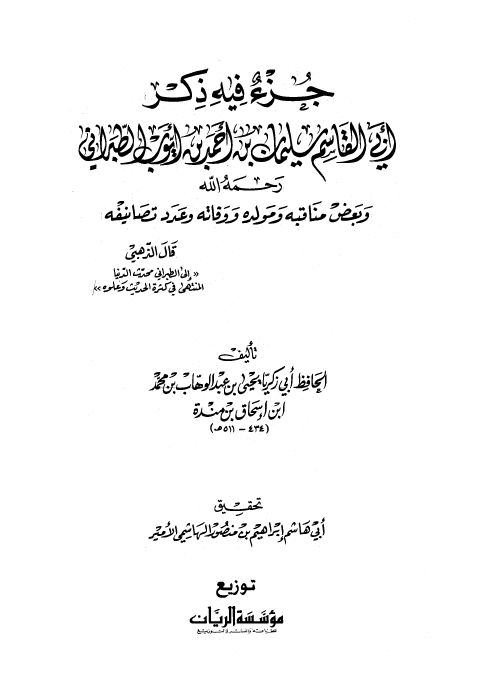
جزء فيه ذكر أبي القاسم سليمان بن أحمد بن أيوب الطبراني وبعض مناقبه ومولده ووفاته وعدد تصانيفه جزء فيه ذكر أبي القاسم سليمان بن أحمد بن أيوب الطبراني وبعض مناقبه ومولده ووفاته وعدد تصانيفه يحيى بن عبد الوهاب بن محمد بن إسحاق بن مندة مفيدة الحسنى لدفع ظن الخلو بالسكنى فتاوى الثقات في الخلوات
مفيدة الحسنى لدفع ظن الخلو بالسكنى فتاوى الثقات في الخلوات
الحسن بن عمار الشرنبلاوي الحنفي
مفيدة الحسنى لدفع ظن الخلو بالسكنى فتاوى الثقات في الخلوات
مفيدة الحسنى لدفع ظن الخلو بالسكنى فتاوى الثقات في الخلوات
الحسن بن عمار الشرنبلاوي الحنفي
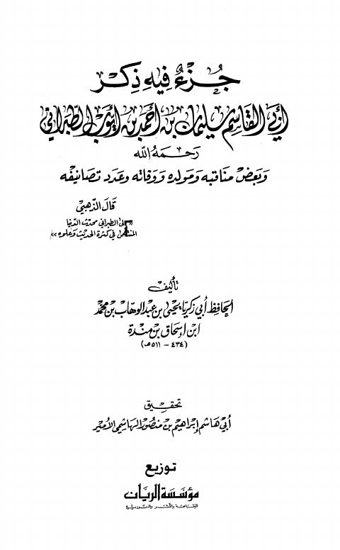
جزء فيه ذكر أبي القاسم سليمان بن أحمد بن أيوب الطبراني وبعض مناقبه ومولده ووفاته وعدد تصانيفه جزء فيه ذكر أبي القاسم سليمان بن أحمد بن أيوب الطبراني وبعض مناقبه ومولده ووفاته وعدد تصانيفه يحيى بن عبد الوهاب بن محمد بن إسحاق بن مندة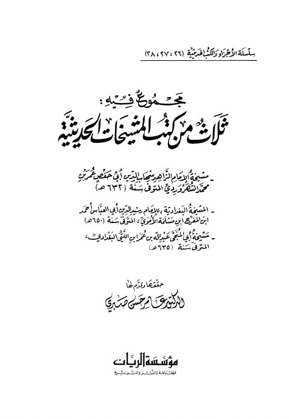
مجموع فيه ثلاث من كتب المشيخات الحديثة مجموع فيه ثلاث من كتب المشيخات الحديثة السهرودي • ابن مسلمة الأموي • ابن اللتي البغدادي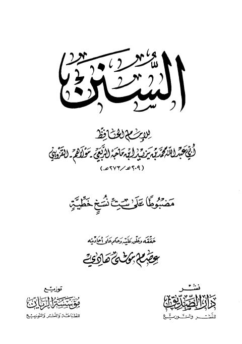
السنن للإمام الحافظ ابن ماجه السنن للإمام الحافظ ابن ماجه محمد بن يزيد أبو عبد الله القزويني ابن ماجه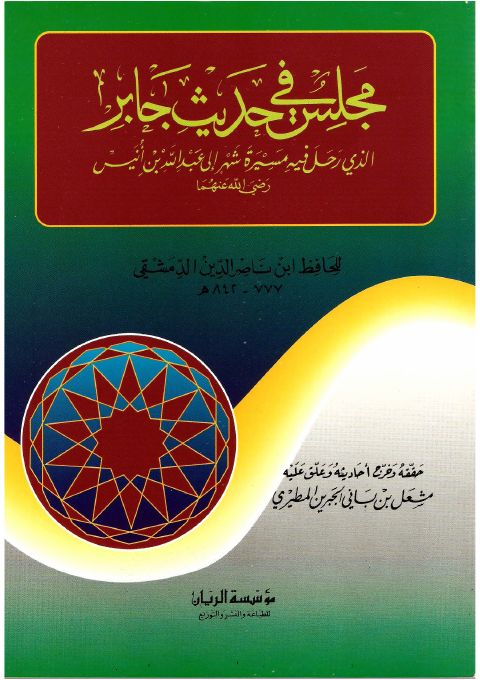
مجلس في حديث جابر الذي رحل فيه مسيرة شهر إلى عبد الله بن أنيس رضي الله عنهما مجلس في حديث جابر الذي رحل فيه مسيرة شهر إلى عبد الله بن أنيس رضي الله عنهما ابن ناصر الدين الدمشقي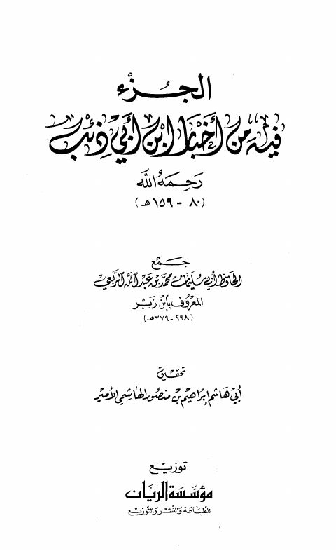
الجزء فيه من أخبار ابن أبي ذئب الجزء فيه من أخبار ابن أبي ذئب محمد بن عبد الله الربعي ابن زبر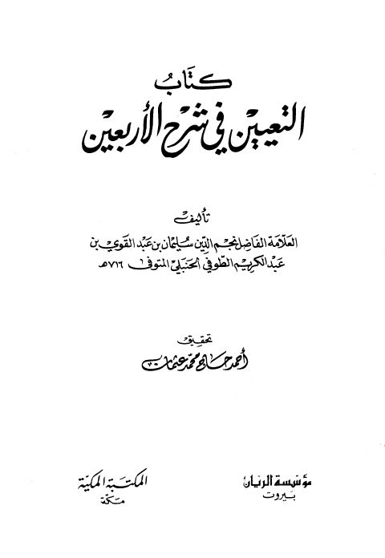
كتاب التعيين في شرح الأربعين كتاب التعيين في شرح الأربعين سليمان بن عبد القوي الطوفي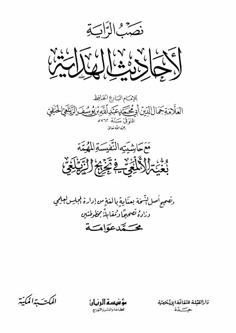
نصب الراية لأحاديث الهداية مع حاشيته بغية الألمعي في تخريج الزيلعي نصب الراية لأحاديث الهداية مع حاشيته بغية الألمعي في تخريج الزيلعي عبد الله بن يوسف بن محمد الزيلعي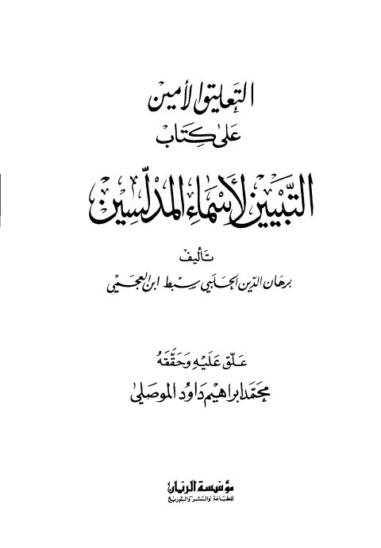
التعليق الأمين على كتاب التبيين لأسماء المدلسين التعليق الأمين على كتاب التبيين لأسماء المدلسين برهان الدين الحلبي سبط ابن العجمي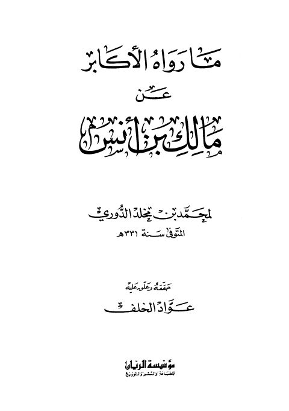
ما رواه الأكابر عن مالك بن أنس ما رواه الأكابر عن مالك بن أنس محمد بن مخلد الدوري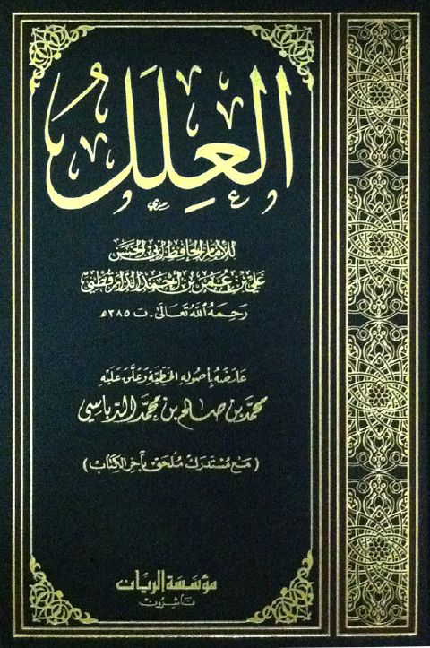
العلل -ت محمد الدباسي- الريان العلل -ت محمد الدباسي- الريان علي بن عمر الدارقطني أبو الحسن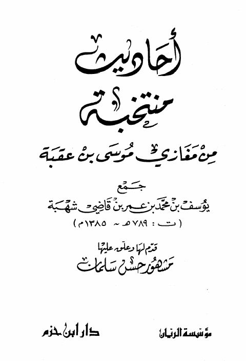
أحاديث منتخبة من مغازي موسى بن عقبة أحاديث منتخبة من مغازي موسى بن عقبة يوسف بن محمد بن عمر بن قاضي شهبة رياض الصالحين- ت. الأرناؤوط
رياض الصالحين- ت. الأرناؤوط
يحيى بن شرف النووي
رياض الصالحين- ت. الأرناؤوط
رياض الصالحين- ت. الأرناؤوط
يحيى بن شرف النووي
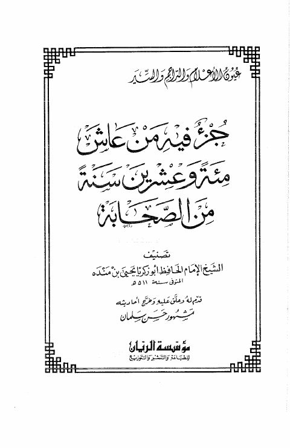
جزء فيه من عاش مائة وعشرون سنة من الصحابة جزء فيه من عاش مائة وعشرون سنة من الصحابة يحيى بن منده أبو زكريا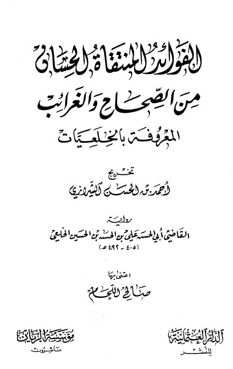
الفوائد المنتقاة الحسان من الصحاح والغرائب المعروفة بالخلعيات الفوائد المنتقاة الحسان من الصحاح والغرائب المعروفة بالخلعيات أحمد بن الحسن الشيرازي • أبو الحسن علي بن الحسين الخليعي الأمالي الحلبية- ط. الريان
الأمالي الحلبية- ط. الريان
أحمد بن علي بن حجر العسقلاني
الأمالي الحلبية- ط. الريان
الأمالي الحلبية- ط. الريان
أحمد بن علي بن حجر العسقلاني
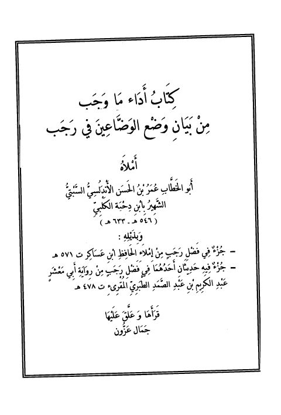
كتاب أداء ما وجب من بيان وضع الوضاعين في رجب وبذيله جزء في فضل رجب وجزء فيه حديثان كتاب أداء ما وجب من بيان وضع الوضاعين في رجب وبذيله جزء في فضل رجب وجزء فيه حديثان عمر بن حسن الأندلسي ابن دحية الكلبي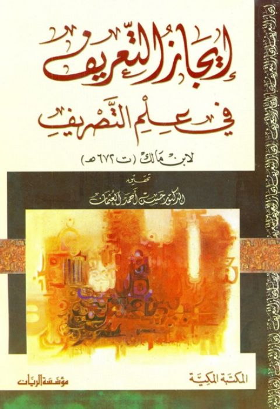
إيجاز التعريف في علم التصريف لابن مالك إيجاز التعريف في علم التصريف لابن مالك محمد بن مالك الطائي النحوي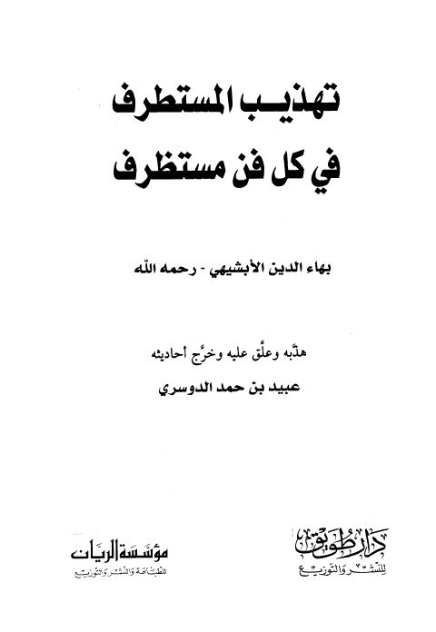
تهذيب المستطرف في كل فن مستظرف تهذيب المستطرف في كل فن مستظرف بهاء الدين الأبشيهي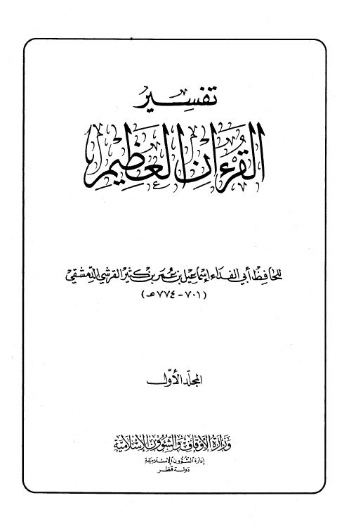
تفسير القرآن العظيم- ط. الريان تفسير القرآن العظيم- ط. الريان إسماعيل بن عمر بن كثير القرشي الدمشقي أبو الفداء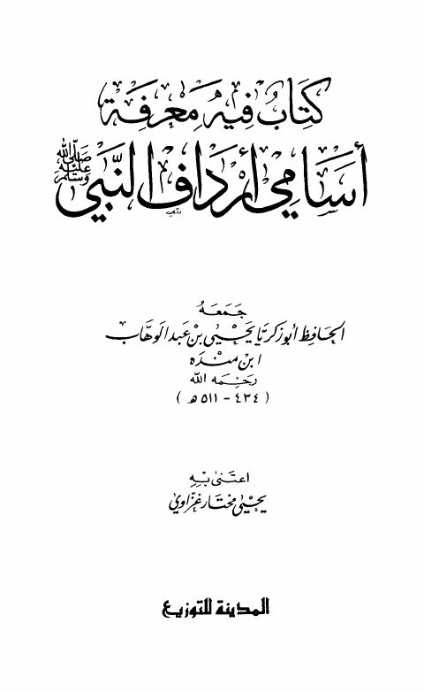
كتاب فيه معرفة أسامي أرداف النبي ﷺ- ط الريان كتاب فيه معرفة أسامي أرداف النبي ﷺ- ط الريان يحيى بن عبد الوهاب ابن منده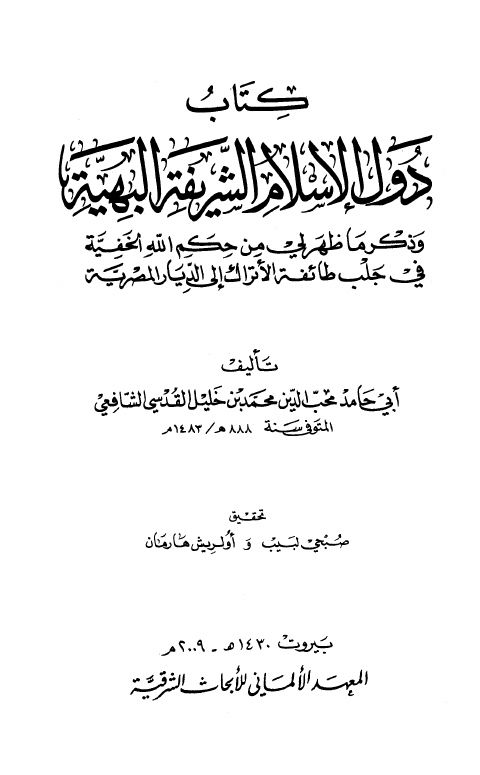
كتاب دول الإسلام الشريفة البهية- ط الريان كتاب دول الإسلام الشريفة البهية- ط الريان محمد بن خليل القدسي الشافعي أحاديث منتخبة من مغازي موسى بن عقبة
أحاديث منتخبة من مغازي موسى بن عقبة
يوسف بن محمد بن عمر بن قاضي شهبة
أحاديث منتخبة من مغازي موسى بن عقبة
أحاديث منتخبة من مغازي موسى بن عقبة
يوسف بن محمد بن عمر بن قاضي شهبة
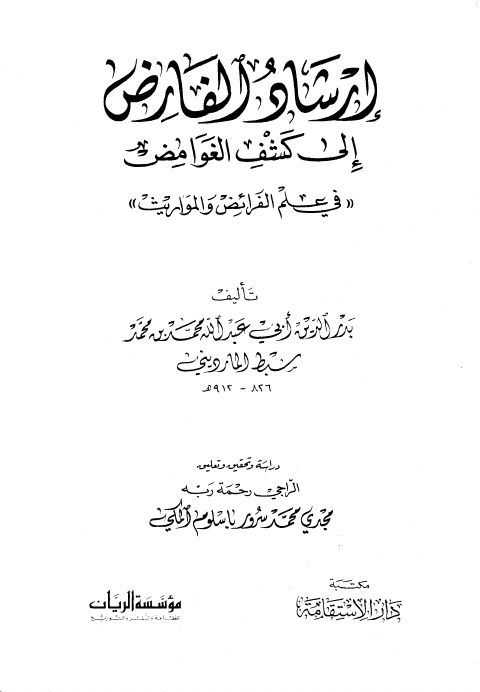
إرشاد الفارض إلى كشف الغوامض في علم الفرائض والمواريث إرشاد الفارض إلى كشف الغوامض في علم الفرائض والمواريث بدر الدين أبو عبد الله محمد بن محمد سبط المارديني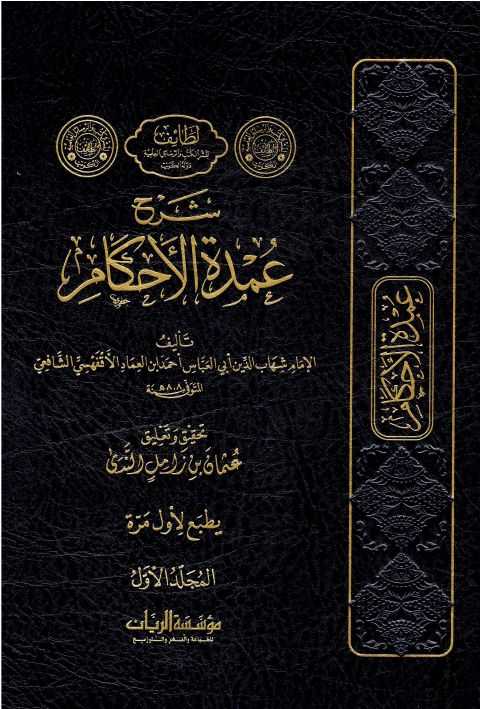
شرح عمدة الأحكام شرح عمدة الأحكام أحمد بن عماد الأقفهسي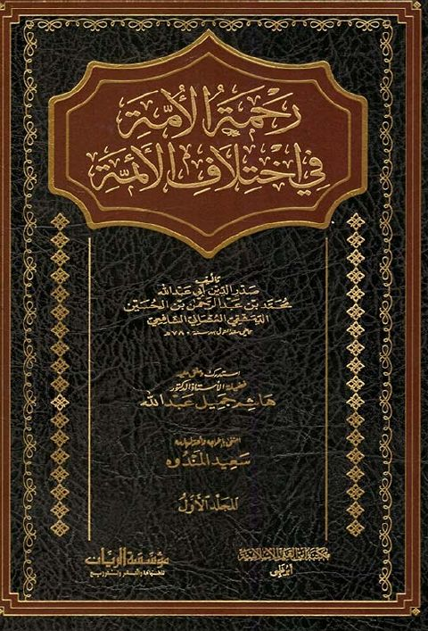
رحمة الأمة في اختلاف الأئمة رحمة الأمة في اختلاف الأئمة صدر الدين محمد بن عبد الرحمن الحسين الدمشقي